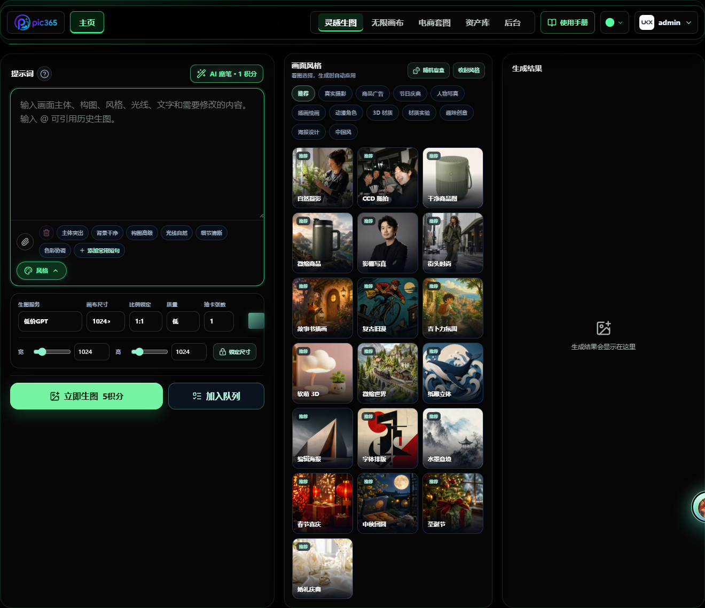
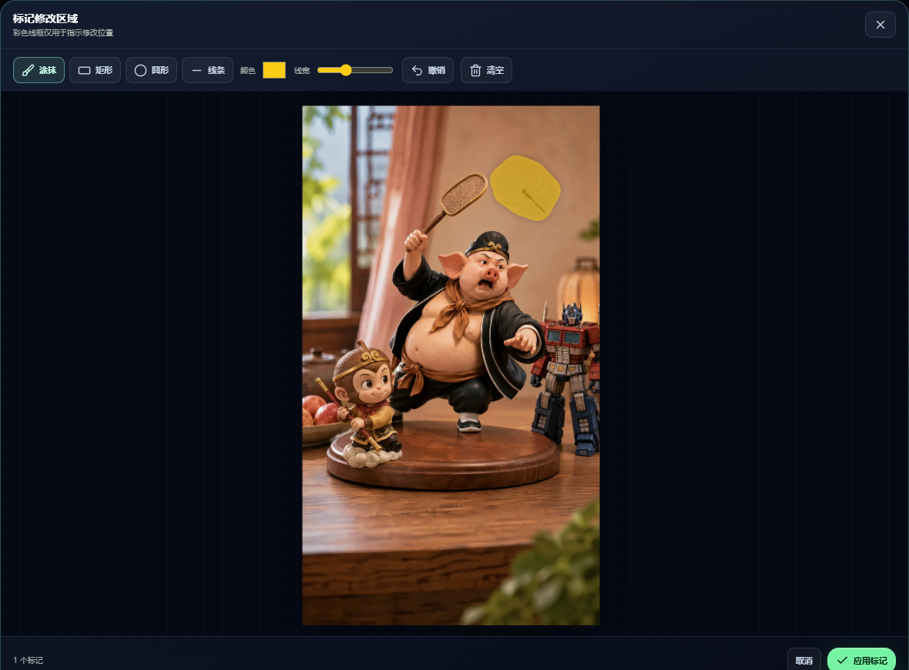

提示词与 AI 魔笔
直接输入主体、构图、风格、光线、文字和修改要求。“AI 魔笔”会帮你整理和优化当前提示词，点击前可先保留自己的核心要求。
当前工作台把提示词、AI 魔笔、快捷修饰词、风格库和生成参数集中在左侧，右侧专门预览结果。可以纯文字生图，也可以上传参考图改图。
顶部在“单图创作”“批量生图”“任务列表”之间切换。单图界面左侧是提示词与参数，右侧是生成结果；右上角同时显示积分与队列占用情况。

直接输入主体、构图、风格、光线、文字和修改要求。“AI 魔笔”会帮你整理和优化当前提示词，点击前可先保留自己的核心要求。
提示框下方可直接加入“主体突出”“背景干净”等修饰词；“风格”面板按类别和缩略图展示可用效果。
底部依次选择生图服务、画布尺寸、比例锁定、质量和抽卡张数。自定义宽高可通过滑杆或数值框调整。
“立即生图”按钮会显示本次预计积分。“加入队列”可以先排队，顶部队列指示器会显示当前占用情况。
先在提示框中写明主体、动作或场景、构图、风格、光线与细节要求。不确定如何组织时，点问号查看范式，或用“AI 魔笔”优化。
按需点选常用修饰词，或打开“风格”面板，从推荐、真实摄影、商业广告、人物写真、插画等分类中选择。
如果需要改图，点提示框左下角的回形针，从本地文件夹或资源库加入图片；也可在提示词中输入 @ 引用历史生图。
确认生图服务、画布尺寸、比例锁定、质量和抽卡张数。不同生图服务支持的尺寸、参考图数量和文件格式可能不同，以页面即时校验为准。
“立即生图”马上执行；“加入队列”适合连续安排。结果出现在右侧，可查看大图、下载，或再次引用为参考图。

纯文字生图时不必添加图片。需要保持人物、商品、构图或材质时，再打开参考图区：最重要的图片放在“母版”并自动记为图1，其他图片从图2开始编号。单个文件上限 7MB，可用格式和数量以当前生图服务的页面提示为准。

最多上传 10 张图片。单图可搭配多条提示词；多图可选择“逐图匹配”或“共用一条”。支持上传 TXT 和粘贴多行文字，系统会按行拆分。

| 输入情况 | 匹配规则 | 适合场景 |
|---|---|---|
| 1 张图 + 1～10 条提示词 | 同一张图分别执行每条提示词 | 一件商品做多个场景、一个人物做多种造型 |
| 多张图 + 共用一条 | 切换到“共用一条”，所有图片执行同一要求 | 统一背景、色调、规格或处理规则 |
| 多张图 + 逐图匹配 | 每张图对应一条提示词，按序号 1 对 1 | 每张图执行不同修改 |
| 保留原图尺寸 | 勾选后尽量沿用每张输入图的尺寸 | 批量修图、统一调整但不想改变原图规格 |

队列中的任务尚未开始；处理中表示上游模型正在执行。未完成任务数量有上限，避免一次堆积过多。
只有支持取消且仍在运行的任务才能取消。是否退回积分以任务最终状态和系统提示为准。
先阅读错误信息，常见原因包括参考图超限、格式不支持、尺寸不合法、模型渠道不可用或等待超时。修正后再重新提交。
点“查看图片”在右侧打开结果；点“重做”可将原提示词、参考图和设置再次加入任务。旧任务如未保留完整参考图，可能无法原样重做。
选最清晰的正面或主体完整图为母版，提示词明确列出不可改变项，并只把辅助用途交给其他参考图。
逐项检查：是否选择模型、尺寸是否合法、参考图数量或格式是否超限、提示词是否满足当前模式规则。
缩小涂抹区域，并在提示词中重复强调“仅修改标记区域，其他区域保持不变”。